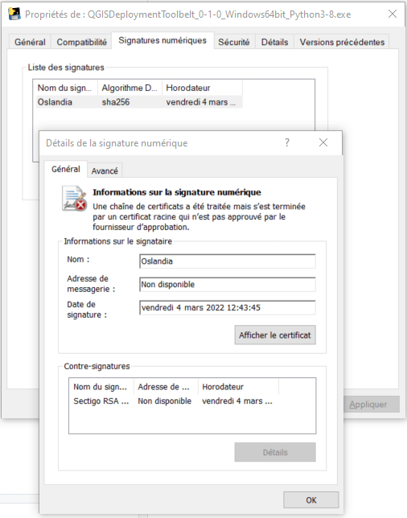

Packaging into an executable
Contents
Packaging into an executable#
The project takes advantage of PyInstaller to package the application into an executable.
The output binary and all embedded dependencies is located into a subfolder named: dist/qgis_deployment_toolbelt_{version}_{operating-system}_Python{python-version}.
Windows#
Comply with Windows development requirements before to run.
# Generates MS Version Info
python .\builder\version_info_templater.py
# Generates MS Executable
python -O .\builder\pyinstaller_build_windows.py
To run it, double-click on the executable file (*.exe).
Sign the executable#
Self-signed certificate#
Note
Here is just a quick view. Read the official documentation.
Requirements:
Windows 10+
Powershell > 5 (ideally 7+)
the
signtool.exeutility that can be installed along the Windows 10 SDK. Only the Windows SDK Signing Tools for Desktop Apps feature is required.
Create a self-signed certificate:
New-SelfSignedCertificate -Type Custom -Subject "CN=Oslandia, O=Oslandia, C=FR" -KeyUsage DigitalSignature -FriendlyName "QGIS Deployment Toolbelt" -CertStoreLocation "Cert:\CurrentUser\My" -TextExtension @("2.5.29.37={text}1.3.6.1.5.5.7.3.3", "2.5.29.19={text}")
Save the thumbprint into a variable:
$thumbprint = (Get-ChildItem Cert:\CurrentUser\My -Recurse | Where-Object { $_.FriendlyName -like "QGIS Deployment*" }).Thumbprint
Create a password to encrypt the certificate:
$pass = Read-Host "Enter Password" -AsSecureString
Export it with a password:
Export-PfxCertificate -cert "Cert:\CurrentUser\My\$thumbprint" -FilePath ssc_oslandia_qdeploymenttoolbelt.pfx -Password $pass
Sign it:
Tip
Adapt the path to
signtool.exeto your system (arch and SDK version) and the path to the executable.Try it with automatic mode:
& 'C:\Program Files (x86)\Windows Kits\10\bin\10.0.22000.0\x64\signtool.exe' sign /a /fd SHA256 /td SHA256 /tr http://timestamp.comodoca.com/rfc3161 .\dist\QGISDeploymentToolbelt_0-1-0_Windows64bit_Python3-8.exe
You should see a message like:
Done Adding Additional Store Successfully signed: .\dist\QGISDeploymentToolbelt_0-1-0_Windows64bit_Python3-8.exe
If you see an error, you can try again specifying the certificate to use and the password:
& 'C:\Program Files (x86)\Windows Kits\10\bin\10.0.22000.0\x64\signtool.exe' sign /a /fd SHA256 /f ssc_oslandia_qdeploymenttoolbelt.pfx /P $pass /td SHA256 /tr http://timestamp.comodoca.com/rfc3161
Opening the properties of the executable, the related tab should look like this:

Ubuntu#
Comply with Ubuntu development requirements before to run.
# Generates binary executable
python -O ./builder/pyinstaller_build_ubuntu.py
To run it, for example:
cd dist/qgis_deployment_toolbelt_3-0-0_Ubuntu20-04_64bit_Python3-8-5/
./qgis_deployment_toolbelt_3-0-0_Ubuntu20-04_64bit_Python3-8-5